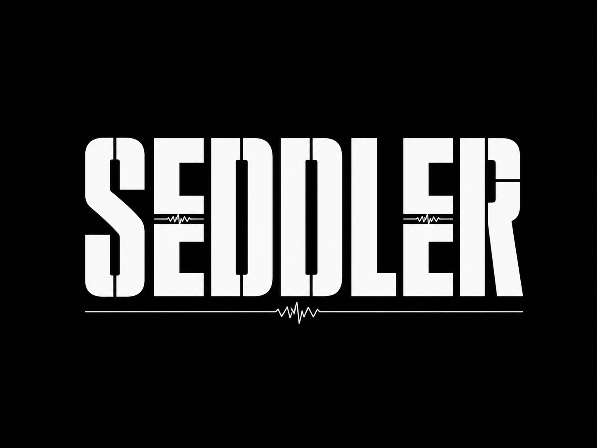
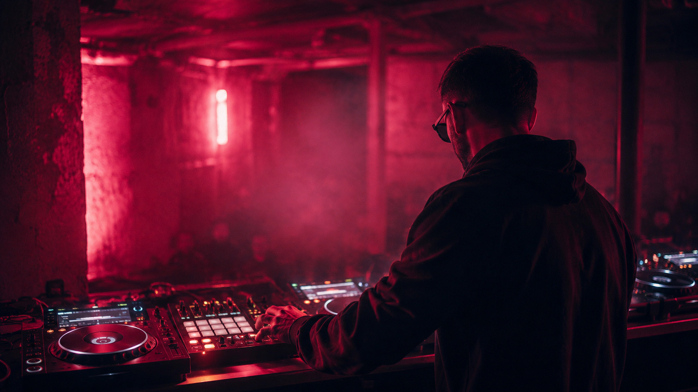
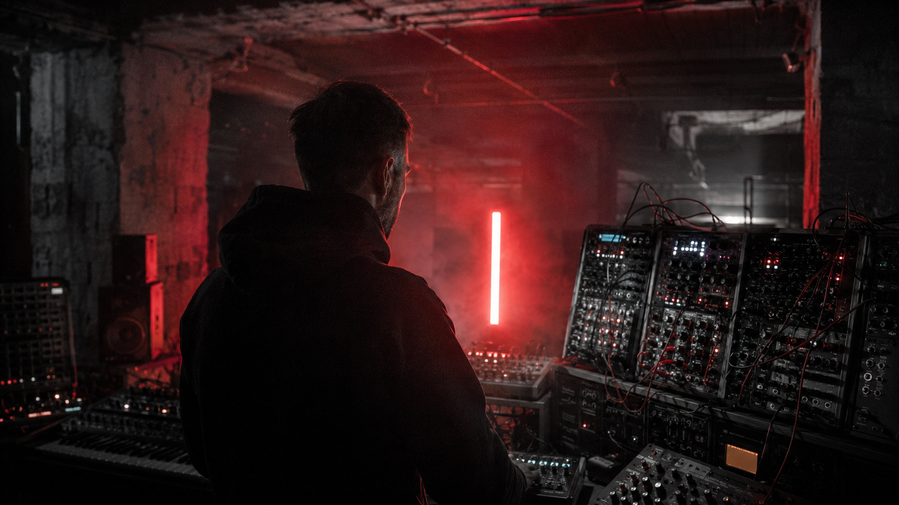

Denys — Berlin-based DJ, producer, sound engineer, and head of Vertigo Records (Berlin's 20-year psychedelic label, est. 2006). SEDDLER is his hybrid DJ project: driving, hypnotic techno and tek-trance performed live from a controller and Maschine groovebox, routed through a hi-end DAC and analog signal path for maximum pressure and clarity on the floor.


Hybrid DJ set — performs from a DJ controller + Maschine groovebox via a hi-end DAC and analog signal path. Standard club booth (2× CDJs + mixer) or controller setup. Full technical & hospitality rider on request.
Booking via Vertigo Records. Fee on request — based on date, region and travel. Available across the EU.
info.vertigorecords@gmail.com